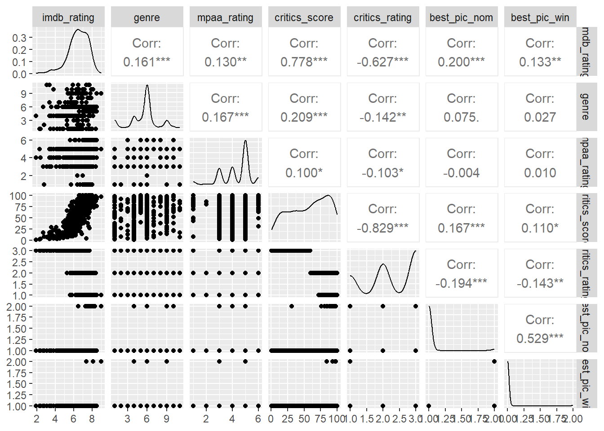

Project 3: Step-by-Step Guide
LINEAR REGRESSION
1. Introduction
Objectives
The objective of the 3rd project in this course was to apply the
learned contents of “Multiple linear regression and modeling”. Skills
learned are:
Exploratory Data Analysis,
Variable Selection, Linear Regression,
Regression, Model Selection,
Inference, Prediction,
Statistical Thinking, R programming
Contents
The multiple linear regression modeling project was split into the sections:
- Part 1: Data inspections
- Part 2: Research question
- Part 3: Explanatory data analysis (variable selection)
- Part 4: Modeling
- Part 5: Prediction
Code chunks and detailed descriptions can be found in the R-Markdown file.
Project Instruction
Your boss has just acquired data about how much audiences and critics like movies as well as many other variables about the movies. The dataset includes information from Rotten Tomatos and IMDB.
She is interested in learning what attributes make a movie popular. She is also interested in learning something new about movies. She wants your team to figure it all out.
As part of this project you will complete exploratory data analysis
(EDA), modeling, and prediction.
The Dataset
The dataset was provided by the course Data
Analysis with R, Duke University hosted on the Coursera
platform.
The dataset is a sample set of 651 observations with 33 variables.
The data were collected in the years from 1970 to 2014. The ratings were
collected by [Rotten Tomatos] from the audience on voluntary basis and
from selected groups of movie critics. So we can’t claim that they were
collected by random sampling. We, therefore, cannot infer the statistics
to the general population, i.e. movie popularity for all people in the
US. We can only infer the model on new data collected in the same time
frame and under the same method as our sample dataset.
A meaningful research question had to be formulated and answered by
multiple linear regression and modeling.
2. Research question
Can the Internet Movie Database (IMDb) rating be explained by factors such as:
- type, genre, run-time, release timing,
- other rating measures (e.g, Tomato-measure from audience and critics), and
- nomination and awards (e.g. Academy Award-winning films)?
3. Exploratory Data Analysis (EDA)
Variable dependencies and relevance
We identified the following variables of interest, which needed to be
checked for linear relationship with the response variable, distribution
and independence.
| Variable type | Variable name | Data type |
|---|---|---|
| Dependent variable (response) | imdb_response | numerical |
| Independent variables (predictors) | critics_score, audience_score | numerical |
| Independent variables (predictors) | runtime, imdb_num_votes | numerical |
| Independent variables (predictors) | title_type, mpaa_rating | categorical |
| Independent variables (predictors) | critics_rating, audience_rating | categorical |
| Independent variables (predictors) | awards and nomination | categorical |
| Independent variables (predictors) | thtr_rel, dvd_rel (dates) | date |
Ten non-relevant variables such as movie_title, studio, director,
actors, and urls were dropped from the dataset.
Split data into training and test data
For modeling (training) and testing (prediction) we split the dataset
into three sub-sets: training data (70%) for model training,
verification data (20%) to verify prediction accuracy during the
training, and testing data (10%) to check the prediction accuracy of the
final model.
Check linear relationship of each predictor variable against response variable
Each predictor variable was checked for distribution, outliers, linearity and correlation using histogram and boxplots and single linear regression diagnostic plots.
Summary plot for numerical variables:
Summary plots for categorical variables:
In total 6 extreme outliers and influencial points had to be removed
from the dataset. Predictor runtime was truncated and
log-transformed to meet a normal distribution. Several predictors had to
be dropped due to non-linearity or low correlation with the response
variable.
Colinearity check (independence of variables)
Finally, we had to check for independence between the predictor variables (colinearity). Independence is sometimes difficult to avoid, decisions have to be made out of contaxt and from knowledge of the data
For example, audience_score and
critics_score are highly correlated. Nevertheless, they
were independently collected from two different groups, audience and
critics. Therefore, both were included in the model.
In contrast, audience_rating and
critics_rating were dropped from the model, because they
are just an categorical aggregation of audience_score and
critics_score data, respectively.
Selected variables (pre-selection)
Below the list of remaining important variables meeting the above
conditions with information from simple linear model
and diagnostic plots. As candidates for the model we selected 3
numerical predictors and 5 categorical predictors. In total 8
predictors.
4. Modeling
Our modeling goals were:
- Finding the best model that fits the training dataset
- Optimizing the model for high prediction accuracy
- Avoiding over- or under-fitting, prefer the simplest and best model (parsimonious model)
The modeling was conducted by a step-by-step forward
selection approach. As criteria measure for variable selection
we used adjusted R-squared that optimizes the prediction
accuracy.
We run a prediction test with the verification dataset after each
step and monitored its accuracy.
Forward selection approach
We started with an empty model (model_null) and added variables
one-at-a-time until we couldn’t find any variables that improved the
model as measured by adjusted R-squared. In this course we carried out
each selection step manually step-by-step, resulting in 35 models.
After we demonstrated the manual step-by-step process we utilized as
alternative the integrated step()-function from R package
MASS instead. The step()-function selects the
best model by forward, backward or bi-directional approach with one
function call.
A list for the best models after each step is shown below, as well as
a plot regarding improvements in fit, measured in adjusted R-squared
(adjR2), and prediction accuracy, measured in Root Mean Square Error
(RMSE).
| model | variables | adjusted_R2 | RMSE |
|---|---|---|---|
| m1_03 | audience_score | 0.7939711 | 0.5796008 |
| m2_02 | audience_score+critics_score | 0.8350502 | 0.5278249 |
| m3_03 | audience_score+critics_score+genre | 0.8491622 | 0.5115876 |
| m4_01 | audience_score+critics_score+genre+log(runtime) | 0.8530012 | 0.4915971 |
| m5_01 | audience_score+critics_score+genre+log(runtime)+title_type | 0.8534625 | 0.4916075 |
| m6_03 | audience_score+critics_score+genre+log(runtime)+title_type+best_dir_win | 0.8534709 | 0.4921523 |
| m7_01 | audience_score+critics_score+genre+log(runtime)+title_type+best_dir_win+best_pic_nom | 0.8532064 | 0.4923146 |

As result, model m4_01 turned out to be the best model
in respect of our goals (best fit, optimized prediction, simplest and
best model)
Check conditions
To apply inference to new datasets, the multiple regression method depends on the following assumptions:
- the residuals are independent
- the residuals are nearly normal distributed (less important for larger datasets)
- the variability of the residuals is nearly constant
- residuals are independent
- each variable is linearly related to the response variable

The conditions are largely met with some limitations;
- Linearity: A wavy non-linear component remains due to
larger residuals on the left side of the x-axis.
- Constant variability (homoscedasticity): The residuals are
related to the x-axis and show some funnel effect from right to
left.
Summary Modeling
The best model was selected by a step-by-step forward selection approach using adjusted R-squared measure. The model selection was further optimized by removing less significant predictors and for the best prediction accuracy.
The model
\[ \begin{aligned} \widehat{imdb\_rating} = b0\\ &+ b1 \times (critics\_score) + b2 \times (audience\_score) + b3 \times (genreAnima) + b4 \times (genreArt)\\ &+ b5 \times (genreComedy) + b6 \times (genreDrama) + b7 \times (genreDocu) + b8 \times (genreHorror)\\ &+ b9 \times (genreMusical) + b10 \times (genreMystery) + b11 \times (genreOther) + b12 \times (genreSF)\\ &+ b13 \times (runtime\_log) \end{aligned} \]
| term | estimate | std.error | statistic | p.value |
|---|---|---|---|---|
| (Intercept) | 1.7116690 | 0.6007292 | 2.8493188 | 0.0045846 |
| audience_score | 0.0336498 | 0.0013899 | 24.2101883 | 0.0000000 |
| critics_score | 0.0090751 | 0.0009844 | 9.2192044 | 0.0000000 |
| genreAnimation | -0.2790586 | 0.1646319 | -1.6950460 | 0.0907662 |
| genreArt House & International | 0.0498693 | 0.1407809 | 0.3542333 | 0.7233319 |
| genreComedy | -0.2068684 | 0.0806024 | -2.5665297 | 0.0105983 |
| genreDocumentary | 0.3152836 | 0.0982333 | 3.2095396 | 0.0014257 |
| genreDrama | 0.0237413 | 0.0704210 | 0.3371334 | 0.7361753 |
| genreHorror | -0.0556447 | 0.1184759 | -0.4696712 | 0.6388200 |
| genreMusical & Performing Arts | -0.0232443 | 0.1564131 | -0.1486086 | 0.8819298 |
| genreMystery & Suspense | 0.1731705 | 0.0876575 | 1.9755352 | 0.0488249 |
| genreOther | -0.1143020 | 0.1211071 | -0.9438095 | 0.3457791 |
| genreScience Fiction & Fantasy | -0.2207139 | 0.1744752 | -1.2650161 | 0.2065276 |
| log(runtime) | 0.4650320 | 0.1307605 | 3.5563642 | 0.0004163 |
Overall the linear model is a reasonable estimate for the given
dataset. However, movies with lower IMDb ratings show a higher
variability in critics and audience scores. For movies with mid or high
ratings the variability is much smaller.
Answer the research questions
a) Can the Internet Movie Database (IMDb) rating be explained by title_type, genre, or runtime?
The IMDb rating increases by 0.47 points per unit of log(runtime), i.e. the longer the movie the better the rating on average, when all other variables are hold constant.
Furthermore, the the IMDb rating increases by 0.32 points for genre
“documentary”, increases by 0.17 points for genre “mystery”, decreases
by 0.21 points for genre “comedy”, and decreases by 0.28 points for
genre “animation” on average, when all other variables are hold
constant.
b) Can the Internet Movie Database (IMDb) rating be explained by other rating measures, such as “Tomatomeasure” critics score or audience score?
The IMDb rating increases by 0.03 points per unit audience score
(scale 1 -100) and increases by 0.01 points per unit critics score
(scale 1-100) on average, when all other variables are hold constant.
I.e. audience score have a 3-time stronger relationship with IMDb rating
than critics scores.
c) Can the Internet Movie Database (IMDb) rating be explained by Academy awards or nominations?
Academy awards or nominations for best movie have a minor effect
(increase by 0.08) on the IMDb rating but are not significant. Academy
awards of best actor, actress or director have almost no impact and are
not significant.
Note
The model describes only existing relationships between independent
variables and IMDb rating. We cannot draw causation from these findings.
Furthermore, we cannot use the model to make predictions for movie
ratings that are outside of the time frame (1970 -2014). We also cannot
infer the model to the popularity of movies in the general public, but
only to data that are collected with the same variables and
measures.
5. Prediction
As final step, we tested the model with a test dataset. The test dataset was separated from the original movies dataset, earlier in this project. Utilizing the final model we predicted predict the response variable (imdb_rating_hat) and compared it with its true value.
As measure of accuracy we used the Root Mean Square Error (RMSE).
Finally, we looked into residual plots to get some insight into their
distribution and possible remaining patterns.
Test dataset

The test dataset has a sample size of 72 data points and are randomly
distributed.
Prediction and evaluation
Root Mean Square Error (RMSE) comparison
The RMSE for the test dataset is 0.498 and the RMSE of the training
dataset is 0.39. I.e. about 0.1 points larger than the RMSE of the
training data set. This is expected because the model was fitted to the
training dataset and not to the test dataset, hence the training RMSE is
smaller.
Two examples: Interpretation of prediction and prediction interval
Example 1: highest imdb_rating
| audience_score | critics_score | genre | runtime | imdb_rating | fit | res | lwr | upr | interval |
|---|---|---|---|---|---|---|---|---|---|
| 97 | 97 | Mystery & Suspense | 202 | 9 | 8.497676 | 0.5023236 | 7.692482 | 9.302871 | TRUE |
\[
\begin{aligned}
\widehat{imdb\_rating\_9.0} = b0\\
&+ b1 \times (97) + b2 \times (97) + b3 \times (0) + b4 \times (0)
+ b5 \times (0) + b6 \times (0) + b7 \times (0)\\
&+ b8 \times (0) + b9 \times (0) + b10 \times (1) + b11 \times
(0) + b12 \times (0) + b13 \times (202\_log)
\end{aligned}
\]
We are 95% sure that the average imdb_rating is between
7.7 and 9.3 points, for an audience_score of 97,
critics_score of 97, genre “Mystery &
Suspense” and runtime of 202 minutes. The true value is 9.0
points which is inside the interval and is a good prediction.
Example 2: lowest imdb_rating
| audience_score | critics_score | genre | runtime | imdb_rating | fit | res | lwr | upr | interval |
|---|---|---|---|---|---|---|---|---|---|
| 23 | 10 | Comedy | 85 | 3.4 | 4.435473 | -1.035473 | 3.648125 | 5.222821 | FALSE |
\[
\begin{aligned}
\widehat{imdb\_rating\_3.4} = b0\\
&+ b1 \times (10) + b2 \times (23) + b3 \times (0) + b4 \times (0)
+ b5 \times (1) + b6 \times (0) + b7 \times (0)\\
&+ b8 \times (0) + b9 \times (0) + b10 \times (0) + b11 \times
(0) + b12 \times (0) + b13 \times (85\_log)
\end{aligned}
\]
We are 95% sure that the average imdb_rating is between
3.6 and 5.2 points, for an audience_score of 23,
critics_score of 10, genre “Comedy” and
runtime of 85 minutes. The true value, however, is 3.4
points which is outside the interval and is a bad prediction.
Number of data points that are outside of the prediction interval
There are 6 points out of 72 (8.3%) that are outside the prediction
interval, which is more than the expected rate of 5%. There are some
effects that are not modeled correctly. On the other hand, about 92%
were modeled correctly, which is a pretty good result.
Relationship between predicted and true values

In the ideal case all dots should be on the straight black line.
However, the points, calculated from the model are offset from the ideal
line. There are six points whose prediction intervals do not contain the
true response value (red), predominantly in the lower range.
Diagnostics or prediction accuracy

Besides the few extreme values the distribution is nearly normal
distributed. The residuals variability is slightly larger on the left
(lower imdb ratings) due to some larger residuals. Some wavy pattern is
still present.
Summary Prediction
- We are 95% confident that 92% of the predicted data points contain the true response within their prediction interval, i.e. 92% of the predictions are correct.
- The wavy downward trend in the residual distribution suggests that
there is still some underlying non-linear component present which could
not be modeled. Refinement with a more general non-linear approach may
lead to further improvements.
——————————————————————————————————————————————————
References:
- Data
Analysis with R, Duke University hosted on the Coursera
platform
- R for Data Science (2e)